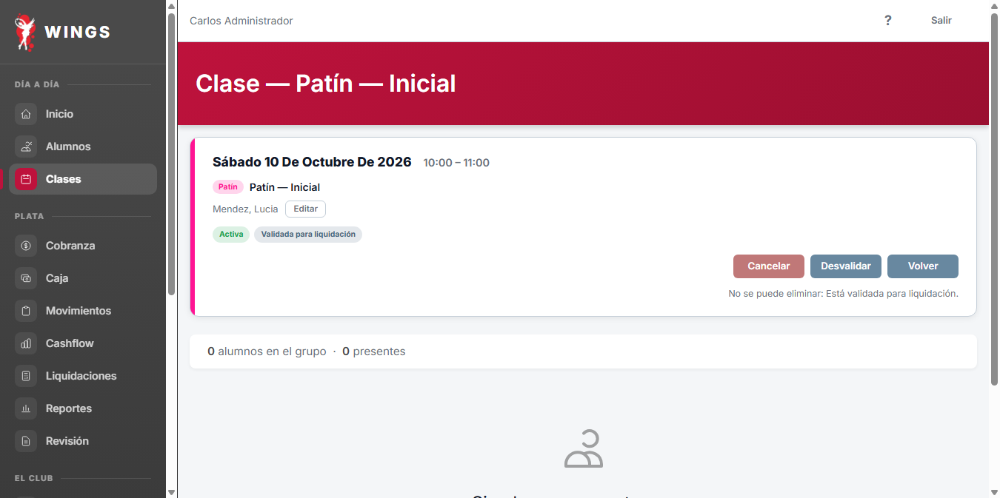
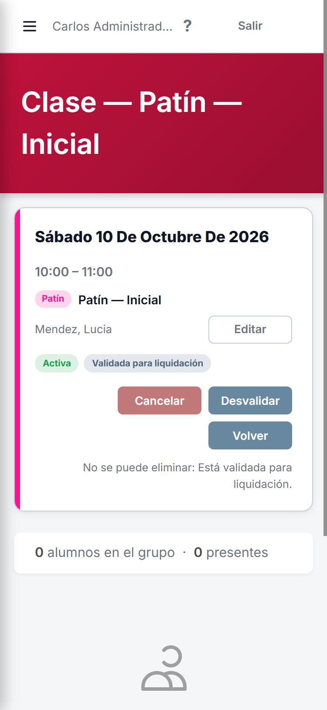
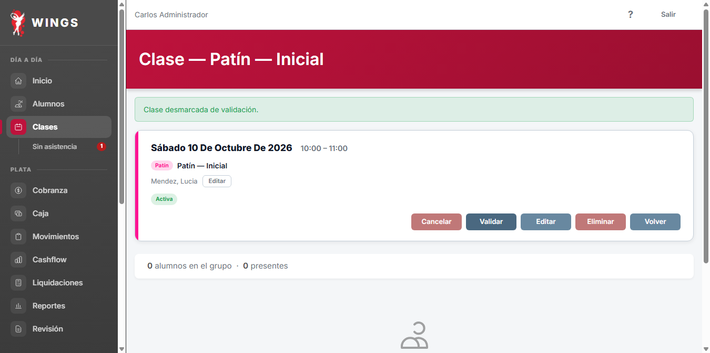
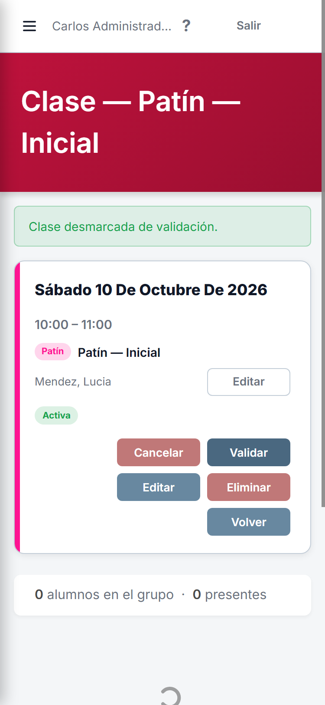
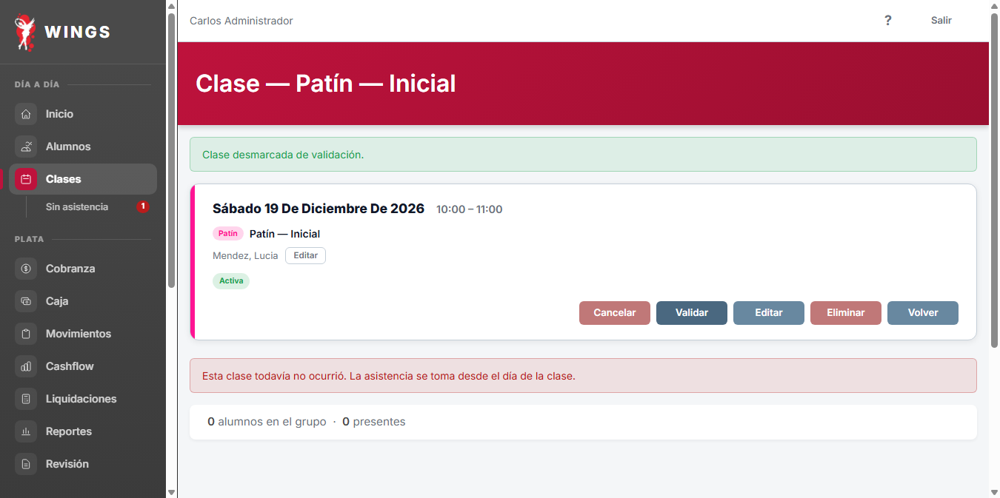
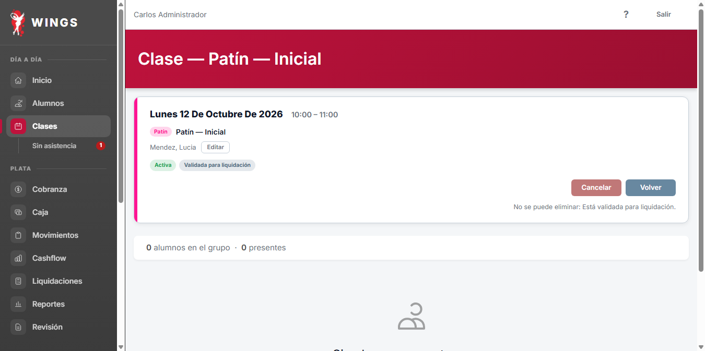
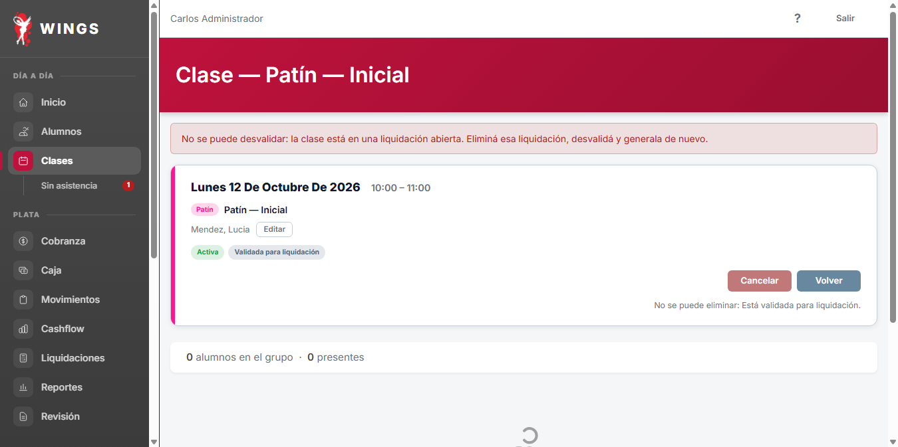
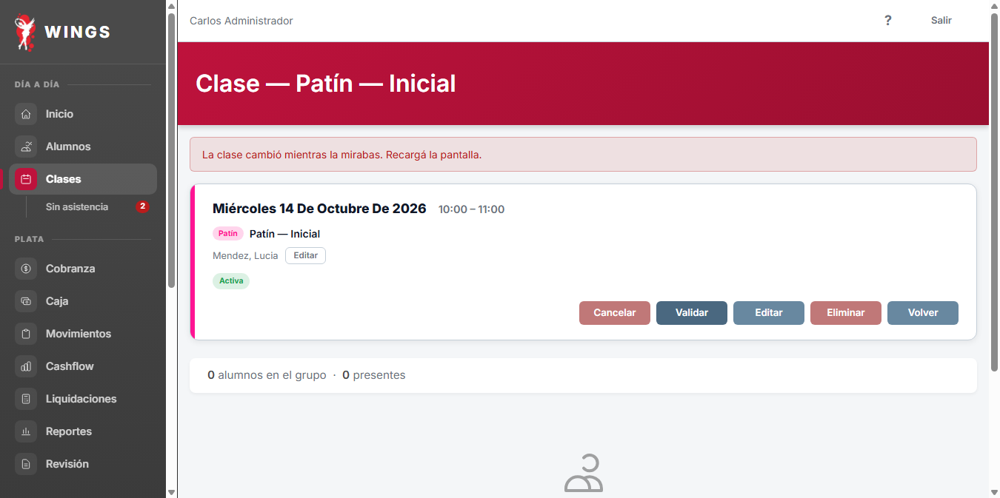

Evidencia de interacción en navegador real Chrome CDP sobre base local descartable (wings_testing_gemini).
Clase pasada validada sin liquidación: el dueño ve el botón «Desvalidar» (gris secundario) y el badge «Validada para liquidación».

En pantalla móvil de 375px el botón mantiene tamaño 96×32px y texto corto «Desvalidar» sin desbordes.

Tras hacer clic en «Desvalidar»: flash «Clase desmarcada de validación.», badge desaparece y vuelve a ofrecer «Validar» y «Editar».

En móvil a 375px tras desvalidar: se muestra el flash verde y reaparece «Validar».

Clase futura validada por error en la tanda 5: se desvalida igual y no contará en liquidaciones posteriores.

Clase que integra una liquidación por hora ABIERTA: la pantalla no ofrece el botón Desvalidar.

Envío forzado directo: rechaza con «No se puede desvalidar: la clase está en una liquidación abierta. Eliminá esa liquidación, desvalidá y generala de nuevo.»

Envío de desvalidar sobre pantalla desactualizada: rechaza con «La clase cambió mientras la mirabas. Recargá la pantalla.» sin invertir estado.
